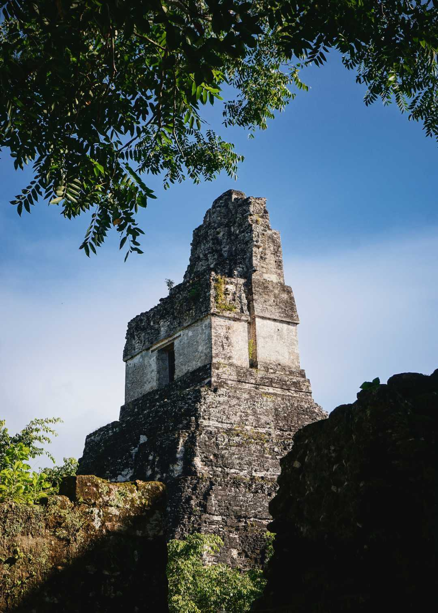
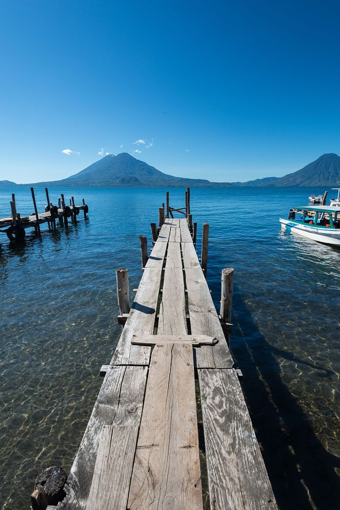
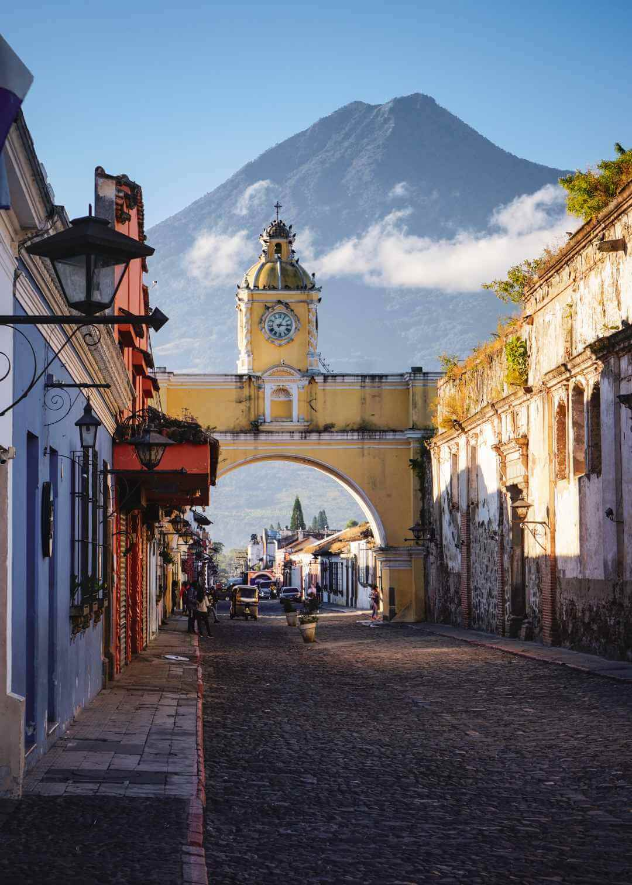
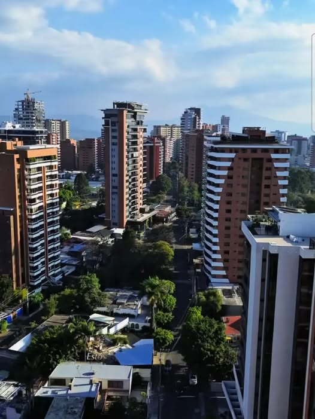
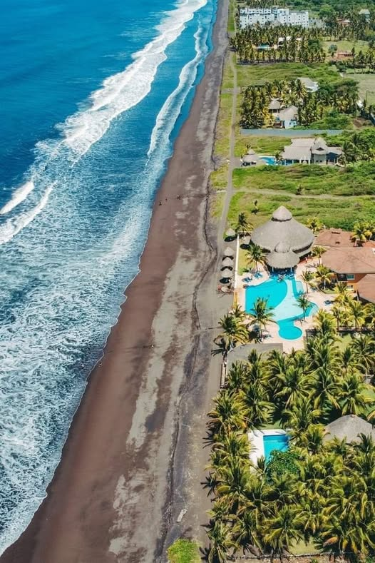
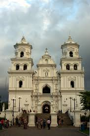
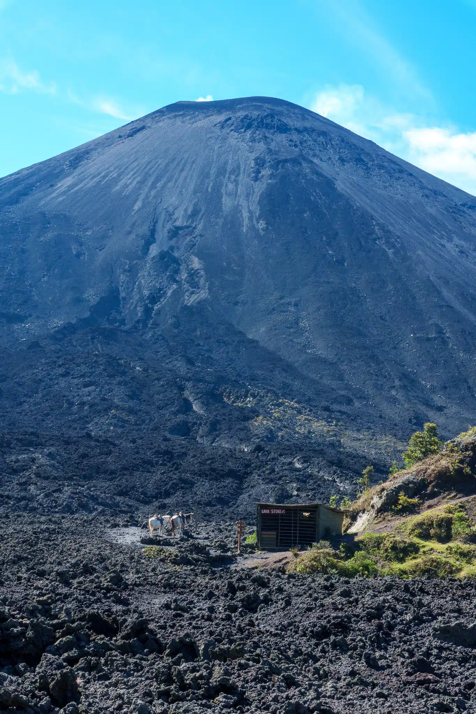
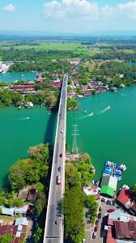

Ruinas mayas en la selva. Es el sitio arqueológico más importante del país.

Un lago rodeado de volcanes y pueblos pintorescos.
Es un destino popular para el turismo.

Una ciudad colonial con calles empedradas y arquitectura española.
Es un sitio declarado Patrimonio de la Humanidad por la UNESCO.

La capital del país, conocida por su rica historia,
arquitectura colonial y vibrante cultura.

Un destino turístico en la costa del Pacífico,
famoso por sus playas y actividades acuáticas.

Un pueblo conocido por su santuario religioso y su importancia cultural en Guatemala.

Un volcán activo en la sierra, conocido por sus paisajes volcánicos y rutas de senderismo.

Un río que atraviesa la selva, conocido por su belleza natural y sus actividades acuáticas.
